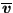
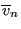

Next: Hydrodynamic lubrication Up: Types of analysis Previous: Acoustics Contents
For incompressible fluids integration of the governing equations over the fluid depth and subsequent linearization leads to the following equation:
where  is the earth acceleration, H is the fluid depth measured from a
reference level,
is the earth acceleration, H is the fluid depth measured from a
reference level,
 is the unit tensor and
is the unit tensor and  is the fluid height with respect to the
reference level. Usually the fluid level at rest is taken as reference
level. The derivation of the equation is described in [91]. The
following assumptions are made:
is the fluid height with respect to the
reference level. Usually the fluid level at rest is taken as reference
level. The derivation of the equation is described in [91]. The
following assumptions are made:
Due to the integration process the above equation is two-dimensional, i.e. only the surface of the fluid has to be meshed. By comparison with the heat equation, the correspondence in Table (10) arises. Therefore, shallow water motion can be simulated using the *HEAT TRANSFER procedure.
The quantity  is the average velocity over the depth and  is its component orthogonal to the boundary of the domain. Due to the averaging the equations hold for small depths only (shallow water approximation). Notice that the equivalence of the heat conduction coefficient is proportional to the depth, which is a geometric quantity. For a different depth a different conduction coefficient must be defined.
There is no real two-dimensional element in CalculiX. Therefore, the two-dimensional Helmholtz equation has to be simulated by expanding the two-dimensional fluid surface to a three-dimensional layer with constant width and applying the boundary conditions in such a way that no variation occurs over the width.
Notice that, similar to the acoustic equations, the shallow water equations are of the Helmholtz type leading to a hyperbolic system. For instationary applications eigenmodes can be calculated and a modal analysis performed.